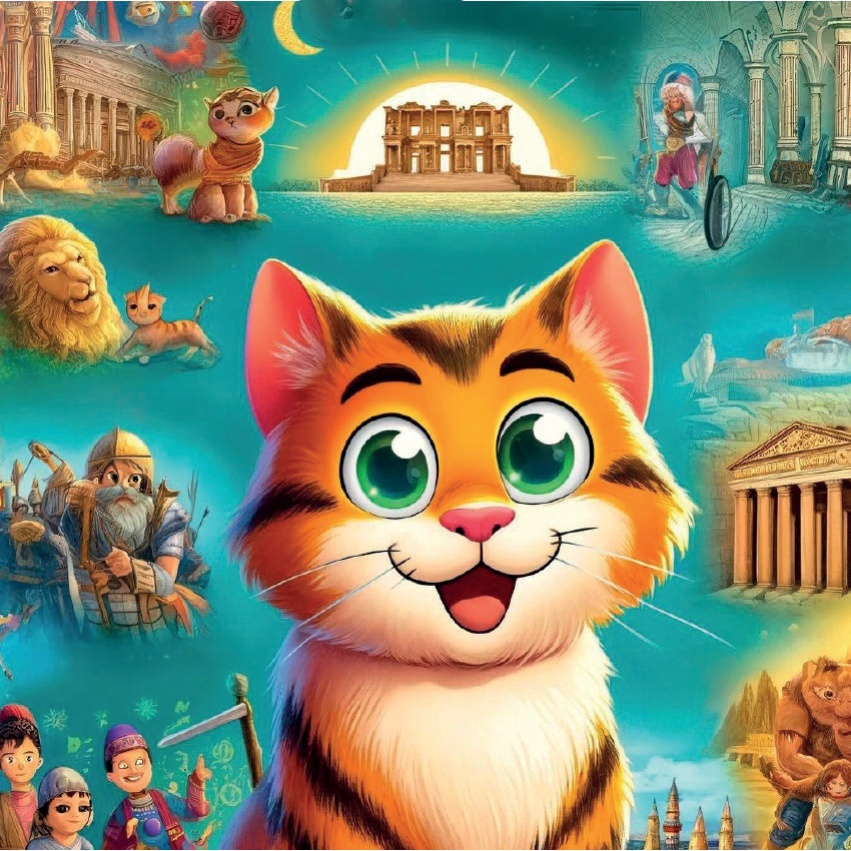
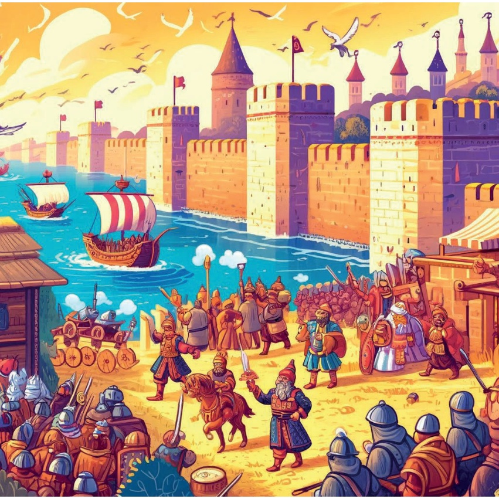
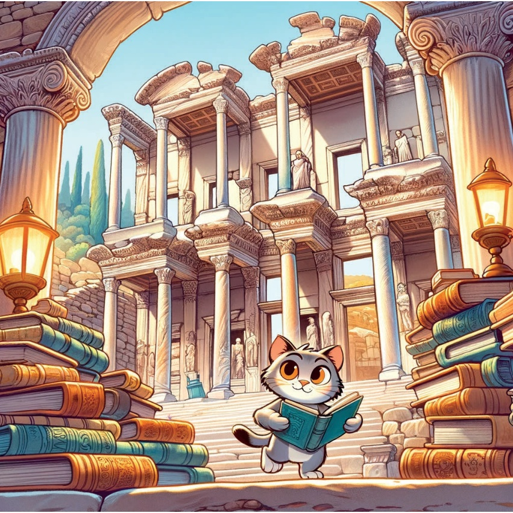
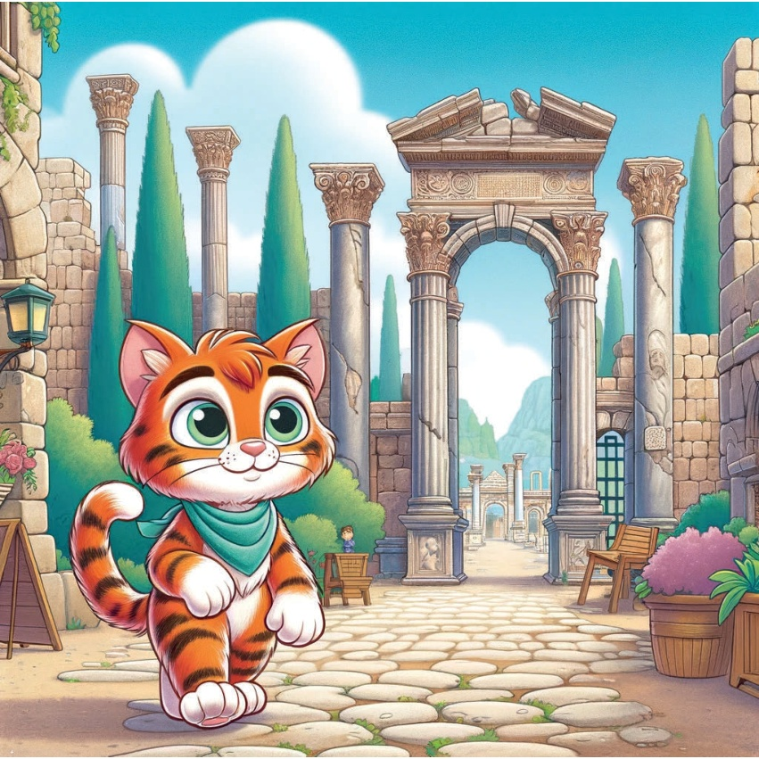
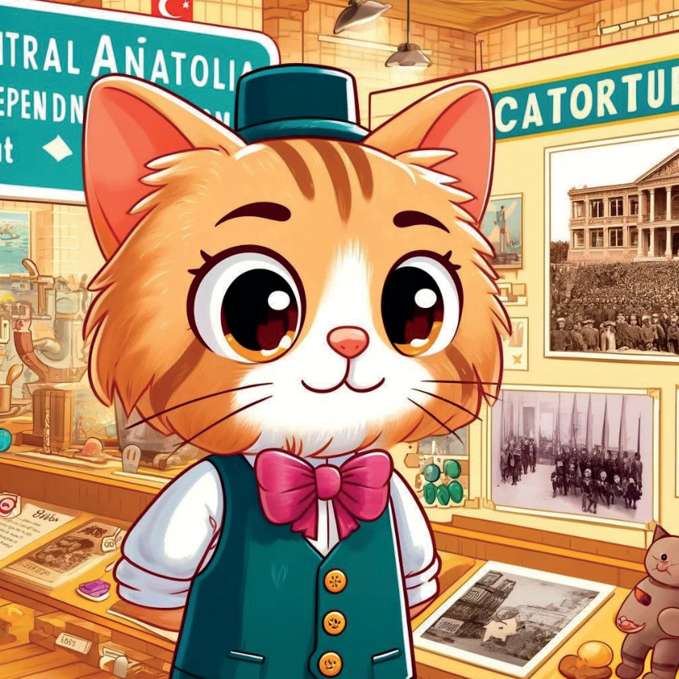
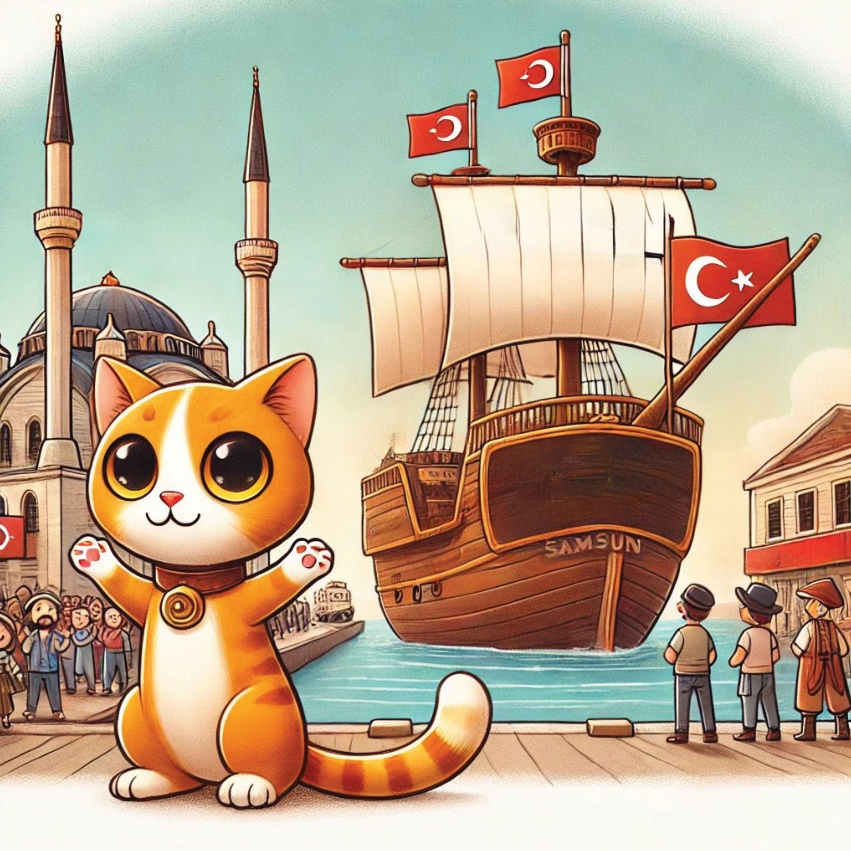
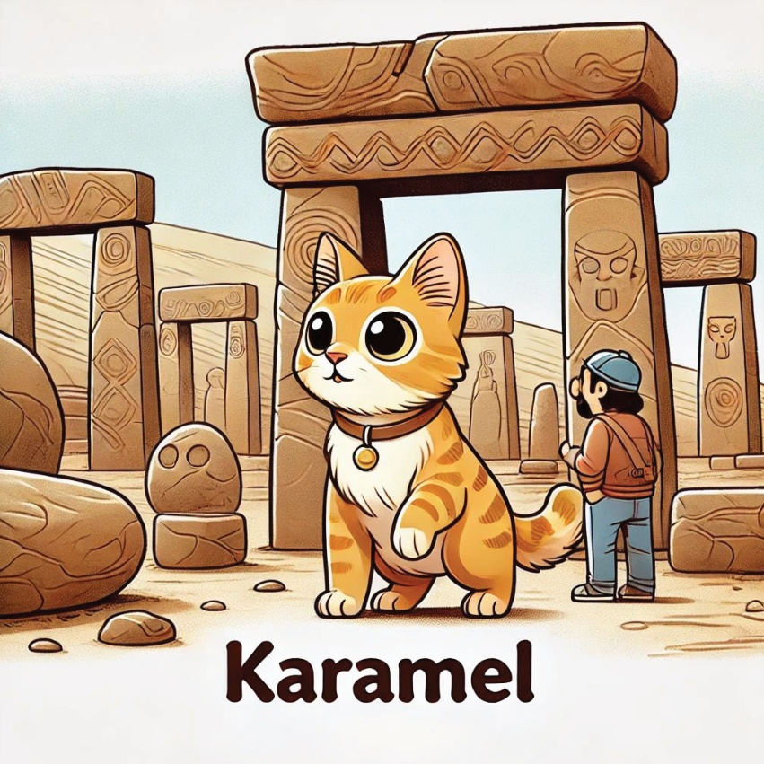

Колись,
була цікава мала котиця на ім’я Карамбіль,
яка обожнювала вивчати історію.
Карамбіль відправилася в подорож через Турель
щоб знайти ключові події та особистостей, що сформували історію країни.
4

5
Мерка́нський регіон – Італій:
Завоювання Італії
Карамелева первая остановка - в Італії,
ще дізналася про Завоювання Італії. Вона уявляла великий Фетх Махамед II, який веде за собою свої сили до перемоги та перетворення міста на дивовижний капітал.
6

7
Азовське регіон – Ізмір:
Клініка Семюса в Ефесію
Потім Карамбіль вирушила до Ізміру
щоб відвідати стародавнє місто Ефісію.
Вона захоплювалася великою бібліотекою Семюса
і уявляла собі викладачів, які там колись працювали.
8

9
Південна Регіон - Αντάллія:
Стародавнє місто Перге
У Кармале в Антантілі досліджувала
стародавнє місто Перге.
Вона прогулялася через великі ворота
і поміж стародавніми вулицями,
уявляючи життя блага цього міста.
10

11
Центральна Анатолія – Анкара:
У Камелі вперше дізналися
Про Мустафу Калемате Atatürk і Вітчизну.
Вона відвідала Анताबір,
Мавзолей Atatürk, і
Вивчилася про його бачення для
Нової Туреччини.
12

13
Самбур – це важкий регіон Черного моря:
В Сумах Карамель дізналась про історію прибуття Bandırma Vapuru.
Вона уявляла захоплення та важливість цього події, яка означила початок турецької війни незалежності.
14

15
Ура́м, Карамел навчилась про Ерзумський конгрес – це важливе моменту для турецької війни незалежності. Вона уявляла щирі розмови та рішення, які допомогли сформувати сучасну Туречщину.
16
17
Співвіднена Анатолія - Гобеклі Тепе:
Найстаріший храм світу
Завершення подорожі Карамеля було в гостях Гобеклі Тепе в Півночі Анатолії.
Вона дослідила давнє місце та дізналася про його значення як найстарший відомий храм у світі, виявляючи таємниці раннього цивілізації.
18

19
З її серцем повною захопленням і розумом заповненим знаннями, Карамèl зрозуміла, що справжні сокровища Турелу — це її багата історія та люди, які її створили. Вона повернулася додому, мріючи про наступний пригодницький вир.